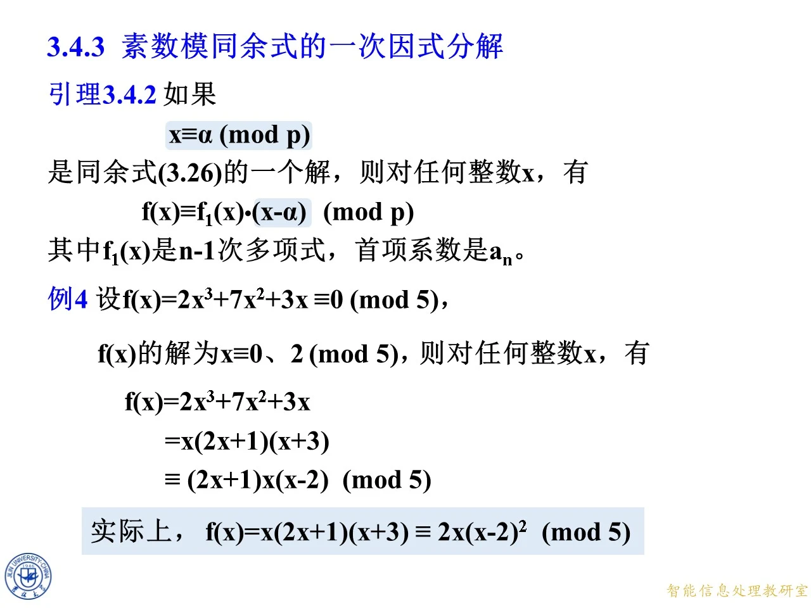
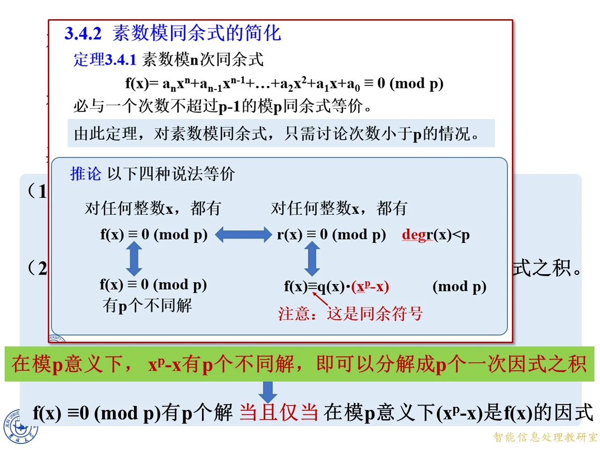

本节位于同余式求解与素数模同余式化简之后，研究多项式的根怎样转化为一次因式，以及这种转化为何在素数模下特别有效。内容从试根和提因式推进到根数上界、全剩余类的乘积分解，最后得到 Wilson 定理及其逆命题。清单汇集两次授课的同内容页面，以下按页码顺序分别完整覆盖，重复页用于核对和强化易错点。
从根到一次因式：引理、例 4 与试根练习
◆ p.134-135 ｜课题导入与三道填空
本组起始为课题过渡页，随后要求分别计算 ( x − 1 ) ( x − 3 ) ≡ 0 ( m o d m ) (x-1)(x-3)\equiv0\pmod m ( x − 1 ) ( x − 3 ) ≡ 0 ( mod m ) m = 7 , 4 , 8 m=7,4,8 m = 7 , 4 , 8 m m m 7 7 7 7 7 7 7 7 7 x ≡ 1 , 3 ( m o d 7 ) x\equiv1,3\pmod7 x ≡ 1 , 3 ( mod 7 ) 2 2 2 x = 0 , 1 , 2 , 3 x=0,1,2,3 x = 0 , 1 , 2 , 3 4 4 4 3 , 0 , 3 , 0 3,0,3,0 3 , 0 , 3 , 0 1 , 3 1,3 1 , 3 2 2 2 0 0 0 7 7 7 1 , 3 , 5 , 7 1,3,5,7 1 , 3 , 5 , 7 4 4 4 x = 5 x=5 x = 5 4 , 2 4,2 4 , 2 8 8 8 8 ≡ 0 ( m o d 8 ) 8\equiv0\pmod8 8 ≡ 0 ( mod 8 )
◆ p.136 ｜引理 3.4.2：一个根对应一个一次因式
设 p p p n n n f ( x ) = a n x n + a n − 1 x n − 1 + ⋯ + a 1 x + a 0 f(x)=a_nx^n+a_{n-1}x^{n-1}+\cdots+a_1x+a_0 f ( x ) = a n x n + a n − 1 x n − 1 + ⋯ + a 1 x + a 0 x ≡ α ( m o d p ) x\equiv\alpha\pmod p x ≡ α ( mod p ) n − 1 n-1 n − 1 f 1 ( x ) f_1(x) f 1 ( x ) f ( x ) ≡ f 1 ( x ) ( x − α ) ( m o d p ) , f(x)\equiv f_1(x)(x-\alpha)\pmod p, f ( x ) ≡ f 1 ( x ) ( x − α ) ( mod p ) , f 1 ( x ) f_1(x) f 1 ( x ) a n a_n a n α \alpha α x − α x-\alpha x − α p p p
◆ p.137-142 ｜用多项式欧几里得除法确定余式
证明先用一次式 x − α x-\alpha x − α f ( x ) f(x) f ( x ) 1 1 1 f ( x ) = f 1 ( x ) ( x − α ) + r ( x ) , deg r ( x ) < deg ( x − α ) = 1. f(x)=f_1(x)(x-\alpha)+r(x),\qquad \deg r(x)<\deg(x-\alpha)=1. f ( x ) = f 1 ( x ) ( x − α ) + r ( x ) , deg r ( x ) < deg ( x − α ) = 1. 1 1 1 r ( x ) r(x) r ( x ) r r r f 1 ( x ) f_1(x) f 1 ( x ) x x x f 1 ( x ) f_1(x) f 1 ( x ) n − 1 n-1 n − 1 f ( x ) f(x) f ( x ) a n a_n a n r ( x ) r(x) r ( x )
◆ p.143-150 ｜代入根，确定常数余式
现在使用尚未用过的条件 f ( α ) ≡ 0 ( m o d p ) f(\alpha)\equiv0\pmod p f ( α ) ≡ 0 ( mod p ) x = α x=\alpha x = α α − α \alpha-\alpha α − α f ( α ) = f 1 ( α ) ( α − α ) + r = r ≡ 0 ( m o d p ) . f(\alpha)=f_1(\alpha)(\alpha-\alpha)+r=r\equiv0\pmod p. f ( α ) = f 1 ( α ) ( α − α ) + r = r ≡ 0 ( mod p ) . p ∣ r p\mid r p ∣ r f 1 ( α ) f_1(\alpha) f 1 ( α ) p p p
◆ p.151-154 ｜消去余式，完成引理证明
把 r ≡ 0 ( m o d p ) r\equiv0\pmod p r ≡ 0 ( mod p ) f ( x ) = f 1 ( x ) ( x − α ) + r ≡ f 1 ( x ) ( x − α ) ( m o d p ) . f(x)=f_1(x)(x-\alpha)+r\equiv f_1(x)(x-\alpha)\pmod p. f ( x ) = f 1 ( x ) ( x − α ) + r ≡ f 1 ( x ) ( x − α ) ( mod p ) . 1 1 1 α \alpha α x = α x=\alpha x = α f ( α ) ≡ 0 ( m o d p ) f(\alpha)\equiv0\pmod p f ( α ) ≡ 0 ( mod p )
◆ p.155-158 ｜例 4：模 5 的三次式与重根
题目给出 f ( x ) = 2 x 3 + 7 x 2 + 3 x ≡ 0 ( m o d 5 ) f(x)=2x^3+7x^2+3x\equiv0\pmod5 f ( x ) = 2 x 3 + 7 x 2 + 3 x ≡ 0 ( mod 5 ) x ≡ 0 , 2 ( m o d 5 ) x\equiv0,2\pmod5 x ≡ 0 , 2 ( mod 5 ) x = 0 , 1 , 2 , 3 , 4 x=0,1,2,3,4 x = 0 , 1 , 2 , 3 , 4 0 , 12 , 50 , 126 , 252 0,12,50,126,252 0 , 12 , 50 , 126 , 252 5 5 5 0 , 2 , 0 , 1 , 2 0,2,0,1,2 0 , 2 , 0 , 1 , 2 f ( x ) = x ( 2 x 2 + 7 x + 3 ) = x ( 2 x + 1 ) ( x + 3 ) . f(x)=x(2x^2+7x+3)=x(2x+1)(x+3). f ( x ) = x ( 2 x 2 + 7 x + 3 ) = x ( 2 x + 1 ) ( x + 3 ) . 2 x + 1 = 2 ( x − 2 ) + 5 ≡ 2 ( x − 2 ) ( m o d 5 ) 2x+1=2(x-2)+5\equiv2(x-2)\pmod5 2 x + 1 = 2 ( x − 2 ) + 5 ≡ 2 ( x − 2 ) ( mod 5 ) x + 3 = ( x − 2 ) + 5 ≡ x − 2 ( m o d 5 ) x+3=(x-2)+5\equiv x-2\pmod5 x + 3 = ( x − 2 ) + 5 ≡ x − 2 ( mod 5 ) f ( x ) ≡ ( 2 x + 1 ) x ( x − 2 ) ≡ 2 x ( x − 2 ) 2 ( m o d 5 ) . f(x)\equiv(2x+1)x(x-2)\equiv2x(x-2)^2\pmod5. f ( x ) ≡ ( 2 x + 1 ) x ( x − 2 ) ≡ 2 x ( x − 2 ) 2 ( mod 5 ) . 0 , 2 0,2 0 , 2 2 2 2
◆ p.159-166 ｜定理 3.4.2：多个不同根可连续提出
定理 3.4.2 设 x ≡ α i ( m o d p ) x\equiv\alpha_i\pmod p x ≡ α i ( mod p ) i = 1 , … , k i=1,\ldots,k i = 1 , … , k 1 ≤ k ≤ n 1\le k\le n 1 ≤ k ≤ n k k k f ( x ) ≡ f k ( x ) ( x − α 1 ) ( x − α 2 ) ⋯ ( x − α k ) ( m o d p ) , f(x)\equiv f_k(x)(x-\alpha_1)(x-\alpha_2)\cdots(x-\alpha_k)\pmod p, f ( x ) ≡ f k ( x ) ( x − α 1 ) ( x − α 2 ) ⋯ ( x − α k ) ( mod p ) , f k ( x ) f_k(x) f k ( x ) n − k n-k n − k a n a_n a n x − α 1 x-\alpha_1 x − α 1 f ( x ) ≡ f 1 ( x ) ( x − α 1 ) ( m o d p ) f(x)\equiv f_1(x)(x-\alpha_1)\pmod p f ( x ) ≡ f 1 ( x ) ( x − α 1 ) ( mod p ) α i \alpha_i α i 2 ≤ i ≤ k 2\le i\le k 2 ≤ i ≤ k f 1 ( α i ) ( α i − α 1 ) ≡ f ( α i ) ≡ 0 ( m o d p ) . f_1(\alpha_i)(\alpha_i-\alpha_1)\equiv f(\alpha_i)\equiv0\pmod p. f 1 ( α i ) ( α i − α 1 ) ≡ f ( α i ) ≡ 0 ( mod p ) . α i − α 1 ≢ 0 ( m o d p ) \alpha_i-\alpha_1\not\equiv0\pmod p α i − α 1 ≡ 0 ( mod p ) p p p f 1 ( α i ) ≡ 0 ( m o d p ) f_1(\alpha_i)\equiv0\pmod p f 1 ( α i ) ≡ 0 ( mod p )
◆ p.167-169 ｜把剩余的根转移到商式
上一页已经证明 f 1 ( α i ) ≡ 0 ( m o d p ) f_1(\alpha_i)\equiv0\pmod p f 1 ( α i ) ≡ 0 ( mod p ) x ≡ α 2 , α 3 , … , α k ( m o d p ) x\equiv\alpha_2,\alpha_3,\ldots,\alpha_k\pmod p x ≡ α 2 , α 3 , … , α k ( mod p ) f 1 ( x ) ≡ 0 ( m o d p ) f_1(x)\equiv0\pmod p f 1 ( x ) ≡ 0 ( mod p ) p p p n n n k k k n − 1 n-1 n − 1 k − 1 k-1 k − 1 1 1 1
◆ p.170-172 ｜第二次提因式与归纳收尾
对商式的根 α 2 \alpha_2 α 2 f 1 ( x ) ≡ f 2 ( x ) ( x − α 2 ) ( m o d p ) , f_1(x)\equiv f_2(x)(x-\alpha_2)\pmod p, f 1 ( x ) ≡ f 2 ( x ) ( x − α 2 ) ( mod p ) , f 2 ( x ) f_2(x) f 2 ( x ) n − 2 n-2 n − 2 a n a_n a n α 3 , … , α k \alpha_3,\ldots,\alpha_k α 3 , … , α k k k k deg f k = n − k \deg f_k=n-k deg f k = n − k a n a_n a n
◆ p.173-174 ｜练习：试根并化为等价因式连乘积
以下根的枚举与乘积展开均已逐项复算。
x 4 − 2 x 2 + x + 1 ≡ 0 ( m o d 7 ) x^4-2x^2+x+1\equiv0\pmod7 x 4 − 2 x 2 + x + 1 ≡ 0 ( mod 7 ) x = − 2 x=-2 x = − 2 16 − 8 − 2 + 1 = 7 ≡ 0 ( m o d 7 ) 16-8-2+1=7\equiv0\pmod7 16 − 8 − 2 + 1 = 7 ≡ 0 ( mod 7 ) x + 2 x+2 x + 2 1 , 0 , − 2 , 1 , 1 1,0,-2,1,1 1 , 0 , − 2 , 1 , 1 1 , − 2 , 2 , − 3 1,-2,2,-3 1 , − 2 , 2 , − 3 7 ≡ 0 ( m o d 7 ) 7\equiv0\pmod7 7 ≡ 0 ( mod 7 ) x 4 − 2 x 2 + x + 1 ≡ ( x + 2 ) ( x 3 − 2 x 2 + 2 x − 3 ) ( m o d 7 ) . x^4-2x^2+x+1\equiv(x+2)(x^3-2x^2+2x-3)\pmod7. x 4 − 2 x 2 + x + 1 ≡ ( x + 2 ) ( x 3 − 2 x 2 + 2 x − 3 ) ( mod 7 ) . x = 0 , 1 , 2 , 3 , 4 , 5 , 6 x=0,1,2,3,4,5,6 x = 0 , 1 , 2 , 3 , 4 , 5 , 6 7 7 7 1 , 1 , 4 , 4 , 5 , 0 , 6 1,1,4,4,5,0,6 1 , 1 , 4 , 4 , 5 , 0 , 6 x ≡ − 2 ≡ 5 ( m o d 7 ) x\equiv-2\equiv5\pmod7 x ≡ − 2 ≡ 5 ( mod 7 ) x = 0 , 1 , 2 , 3 , 4 , 5 , 6 x=0,1,2,3,4,5,6 x = 0 , 1 , 2 , 3 , 4 , 5 , 6 7 7 7 4 , 5 , 1 , 5 , 2 , 5 , 6 4,5,1,5,2,5,6 4 , 5 , 1 , 5 , 2 , 5 , 6 x 4 + x + 4 ≡ 0 ( m o d 11 ) x^4+x+4\equiv0\pmod{11} x 4 + x + 4 ≡ 0 ( mod 11 ) x = 2 x=2 x = 2 16 + 2 + 4 = 22 ≡ 0 ( m o d 11 ) 16+2+4=22\equiv0\pmod{11} 16 + 2 + 4 = 22 ≡ 0 ( mod 11 ) x − 2 x-2 x − 2 x 3 + 2 x 2 + 4 x + 9 x^3+2x^2+4x+9 x 3 + 2 x 2 + 4 x + 9 22 ≡ 0 ( m o d 11 ) 22\equiv0\pmod{11} 22 ≡ 0 ( mod 11 ) x = 2 x=2 x = 2 8 + 8 + 8 + 9 = 33 ≡ 0 ( m o d 11 ) 8+8+8+9=33\equiv0\pmod{11} 8 + 8 + 8 + 9 = 33 ≡ 0 ( mod 11 ) x − 2 x-2 x − 2 x 2 + 4 x + 12 x^2+4x+12 x 2 + 4 x + 12 33 ≡ 0 ( m o d 11 ) 33\equiv0\pmod{11} 33 ≡ 0 ( mod 11 ) x 2 + 4 x + 12 ≡ ( x − 3 ) ( x − 4 ) ( m o d 11 ) x^2+4x+12\equiv(x-3)(x-4)\pmod{11} x 2 + 4 x + 12 ≡ ( x − 3 ) ( x − 4 ) ( mod 11 ) − 7 , 12 -7,12 − 7 , 12 11 11 11 4 , 12 4,12 4 , 12 x 4 + x + 4 ≡ ( x − 2 ) 2 ( x − 3 ) ( x − 4 ) ( m o d 11 ) , x^4+x+4\equiv(x-2)^2(x-3)(x-4)\pmod{11}, x 4 + x + 4 ≡ ( x − 2 ) 2 ( x − 3 ) ( x − 4 ) ( mod 11 ) , 2 , 3 , 4 2,3,4 2 , 3 , 4 2 2 2 4 , 6 , 0 , 0 , 0 , 7 , 8 , 3 , 5 , 7 , 4 4,6,0,0,0,7,8,3,5,7,4 4 , 6 , 0 , 0 , 0 , 7 , 8 , 3 , 5 , 7 , 4 x 2 − 3 ≡ 0 ( m o d 13 ) x^2-3\equiv0\pmod{13} x 2 − 3 ≡ 0 ( mod 13 ) 4 2 = 16 ≡ 3 ( m o d 13 ) 4^2=16\equiv3\pmod{13} 4 2 = 16 ≡ 3 ( mod 13 ) x ≡ ± 4 ( m o d 13 ) x\equiv\pm4\pmod{13} x ≡ ± 4 ( mod 13 ) 4 , 9 4,9 4 , 9 x 2 − 3 = x 2 − 16 = ( x + 4 ) ( x − 4 ) x^2-3=x^2-16=(x+4)(x-4) x 2 − 3 = x 2 − 16 = ( x + 4 ) ( x − 4 ) ( x + 4 ) ( x − 4 ) ≡ 0 ( m o d 13 ) (x+4)(x-4)\equiv0\pmod{13} ( x + 4 ) ( x − 4 ) ≡ 0 ( mod 13 ) x 2 − 2 ≡ 0 ( m o d 13 ) x^2-2\equiv0\pmod{13} x 2 − 2 ≡ 0 ( mod 13 ) 13 13 13 0 , 1 , 4 , 9 , 3 , 12 , 10 , 10 , 12 , 3 , 9 , 4 , 1 0,1,4,9,3,12,10,10,12,3,9,4,1 0 , 1 , 4 , 9 , 3 , 12 , 10 , 10 , 12 , 3 , 9 , 4 , 1 2 2 2 13 13 13
拓展 （课件外补充）：上述四题中的综合除法系数、余数、枚举表和因式展开过程是为自学补全的验算。试根发现根以后，应立刻做除法降低次数；只枚举出根而不验证商式，容易漏掉重根或误把三次以上商式当作已经分解完毕。
根数上界与全剩余类的一次因式分解
◆ p.175-178 ｜不同解数为什么不能超过次数
设 f ( x ) f(x) f ( x ) n n n n + 1 n+1 n + 1 p p p α 1 , … , α n + 1 \alpha_1,\ldots,\alpha_{n+1} α 1 , … , α n + 1 n n n f ( x ) ≡ f n ( x ) ∏ i = 1 n ( x − α i ) ( m o d p ) f(x)\equiv f_n(x)\prod_{i=1}^n(x-\alpha_i)\pmod p f ( x ) ≡ f n ( x ) ∏ i = 1 n ( x − α i ) ( mod p ) f n ( x ) f_n(x) f n ( x ) a n a_n a n n + 1 n+1 n + 1 a n ∏ i = 1 n ( α n + 1 − α i ) ≡ 0 ( m o d p ) . a_n\prod_{i=1}^n(\alpha_{n+1}-\alpha_i)\equiv0\pmod p. a n i = 1 ∏ n ( α n + 1 − α i ) ≡ 0 ( mod p ) . a n ≢ 0 ( m o d p ) a_n\not\equiv0\pmod p a n ≡ 0 ( mod p ) α n + 1 − α i \alpha_{n+1}-\alpha_i α n + 1 − α i n + 1 n+1 n + 1 − 1 -1 − 1
◆ p.179-181 ｜定理 3.4.4 与 x p − x x^p-x x p − x n n n n n n n n n x p − x x^p-x x p − x x x x x p ≡ x ( m o d p ) x^p\equiv x\pmod p x p ≡ x ( mod p ) 0 , 1 , 2 , … , p − 1 0,1,2,\ldots,p-1 0 , 1 , 2 , … , p − 1 p p p p p p
◆ p.182-185 ｜第（2）题：x p − x x^p-x x p − x p p p 0 , 1 , … , p − 1 0,1,\ldots,p-1 0 , 1 , … , p − 1 p p p p − p = 0 p-p=0 p − p = 0 1 1 1 1 1 1 x p − x ≡ x ( x − 1 ) ( x − 2 ) ⋯ ( x − ( p − 1 ) ) ( m o d p ) . x^p-x\equiv x(x-1)(x-2)\cdots(x-(p-1))\pmod p. x p − x ≡ x ( x − 1 ) ( x − 2 ) ⋯ ( x − ( p − 1 )) ( mod p ) . x p − x ≡ ∏ a = 0 p − 1 ( x − a ) ( m o d p ) x^p-x\equiv\prod_{a=0}^{p-1}(x-a)\pmod p x p − x ≡ ∏ a = 0 p − 1 ( x − a ) ( mod p ) p p p f ( x ) = x p − x f(x)=x^p-x f ( x ) = x p − x p p p p p p
◆ p.186 ｜第（3）题：有 p p p n n n p p p p p p p p p f ( x ) ≡ q ( x ) x ( x − 1 ) ( x − 2 ) ⋯ ( x − ( p − 1 ) ) ( m o d p ) , f(x)\equiv q(x)x(x-1)(x-2)\cdots(x-(p-1))\pmod p, f ( x ) ≡ q ( x ) x ( x − 1 ) ( x − 2 ) ⋯ ( x − ( p − 1 )) ( mod p ) , q ( x ) q(x) q ( x ) n − p n-p n − p a n a_n a n f ( x ) ≡ q ( x ) ( x p − x ) ( m o d p ) . f(x)\equiv q(x)(x^p-x)\pmod p. f ( x ) ≡ q ( x ) ( x p − x ) ( mod p ) . x x x x p − x ≡ 0 ( m o d p ) x^p-x\equiv0\pmod p x p − x ≡ 0 ( mod p ) f ( x ) ≡ 0 ( m o d p ) f(x)\equiv0\pmod p f ( x ) ≡ 0 ( mod p ) n ≥ p n\ge p n ≥ p
◆ p.187-190 ｜回顾定理 3.4.1 的四种等价说法
课件叠放前一节“素数模同余式的简化”作回顾：f ( x ) f(x) f ( x ) x p − x x^p-x x p − x r ( x ) r(x) r ( x ) deg r < p \deg r<p deg r < p f f f r r r p p p
对任意整数 x x x f ( x ) ≡ 0 ( m o d p ) f(x)\equiv0\pmod p f ( x ) ≡ 0 ( mod p )
对任意整数 x x x r ( x ) ≡ 0 ( m o d p ) r(x)\equiv0\pmod p r ( x ) ≡ 0 ( mod p )
f ( x ) ≡ 0 ( m o d p ) f(x)\equiv0\pmod p f ( x ) ≡ 0 ( mod p ) p p p 在模 p p p x p − x x^p-x x p − x f ( x ) f(x) f ( x ) f ( x ) ≡ q ( x ) ( x p − x ) ( m o d p ) f(x)\equiv q(x)(x^p-x)\pmod p f ( x ) ≡ q ( x ) ( x p − x ) ( mod p )
从第二种说法到第一、三种由同解性得到；有 p p p p p p r r r p p p
含参数例题与 Wilson 定理
◆ p.191-193 ｜例：高次式含有 x p − x x^p-x x p − x f ( x ) = x p + 2 + 2 x p + 1 + 3 x p − x 3 − 2 x 2 − ( p + 3 ) x ≡ 0 ( m o d p ) f(x)=x^{p+2}+2x^{p+1}+3x^p-x^3-2x^2-(p+3)x\equiv0\pmod p f ( x ) = x p + 2 + 2 x p + 1 + 3 x p − x 3 − 2 x 2 − ( p + 3 ) x ≡ 0 ( mod p ) p p p − ( p + 3 ) x ≡ − 3 x ( m o d p ) -(p+3)x\equiv-3x\pmod p − ( p + 3 ) x ≡ − 3 x ( mod p ) ( x p − x ) ( x 2 + 2 x + 3 ) = x p + 2 + 2 x p + 1 + 3 x p − x 3 − 2 x 2 − 3 x . (x^p-x)(x^2+2x+3)=x^{p+2}+2x^{p+1}+3x^p-x^3-2x^2-3x. ( x p − x ) ( x 2 + 2 x + 3 ) = x p + 2 + 2 x p + 1 + 3 x p − x 3 − 2 x 2 − 3 x . f ( x ) ≡ ( x p − x ) ( x 2 + 2 x + 3 ) ( m o d p ) f(x)\equiv(x^p-x)(x^2+2x+3)\pmod p f ( x ) ≡ ( x p − x ) ( x 2 + 2 x + 3 ) ( mod p ) x p x^p x p − x -x − x
◆ p.194-197 ｜由高次因式恒为零得到全部解
费马小定理说明，对任意整数 x x x x p − x ≡ 0 ( m o d p ) x^p-x\equiv0\pmod p x p − x ≡ 0 ( mod p ) f ( x ) ≡ ( x p − x ) ( x 2 + 2 x + 3 ) ≡ 0 ( x 2 + 2 x + 3 ) ≡ 0 ( m o d p ) . f(x)\equiv(x^p-x)(x^2+2x+3)\equiv0(x^2+2x+3)\equiv0\pmod p. f ( x ) ≡ ( x p − x ) ( x 2 + 2 x + 3 ) ≡ 0 ( x 2 + 2 x + 3 ) ≡ 0 ( mod p ) . x ≡ 0 , 1 , 2 , … , p − 1 ( m o d p ) x\equiv0,1,2,\ldots,p-1\pmod p x ≡ 0 , 1 , 2 , … , p − 1 ( mod p ) p p p x 2 + 2 x + 3 x^2+2x+3 x 2 + 2 x + 3 x x x x p − x x^p-x x p − x p p p
◆ p.198-201 ｜例：x p − 1 − 1 x^{p-1}-1 x p − 1 − 1 x p − 1 − 1 ≡ 0 ( m o d p ) x^{p-1}-1\equiv0\pmod p x p − 1 − 1 ≡ 0 ( mod p ) 1 , 2 , … , p − 1 1,2,\ldots,p-1 1 , 2 , … , p − 1 gcd ( x , p ) = 1 \gcd(x,p)=1 g cd( x , p ) = 1 x p − 1 ≡ 1 ( m o d p ) x^{p-1}\equiv1\pmod p x p − 1 ≡ 1 ( mod p ) x ≡ 0 ( m o d p ) x\equiv0\pmod p x ≡ 0 ( mod p ) − 1 -1 − 1 p − 1 p-1 p − 1 1 , 2 , … , p − 1 1,2,\ldots,p-1 1 , 2 , … , p − 1 p − 1 p-1 p − 1 1 1 1 x p − 1 − 1 ≡ ( x − 1 ) ( x − 2 ) ⋯ ( x − ( p − 1 ) ) ( m o d p ) . x^{p-1}-1\equiv(x-1)(x-2)\cdots(x-(p-1))\pmod p. x p − 1 − 1 ≡ ( x − 1 ) ( x − 2 ) ⋯ ( x − ( p − 1 )) ( mod p ) . x p − x = x ( x p − 1 − 1 ) x^p-x=x(x^{p-1}-1) x p − x = x ( x p − 1 − 1 ) x x x 0 0 0 p − 1 p-1 p − 1
◆ p.202-205 ｜例：x p + 1 + ( p + 3 ) x + 2 x^{p+1}+(p+3)x+2 x p + 1 + ( p + 3 ) x + 2 f ( x ) = x p + 1 + ( p + 3 ) x + 2 ≡ 0 ( m o d p ) f(x)=x^{p+1}+(p+3)x+2\equiv0\pmod p f ( x ) = x p + 1 + ( p + 3 ) x + 2 ≡ 0 ( mod p ) x x x x p ≡ x ( m o d p ) x^p\equiv x\pmod p x p ≡ x ( mod p ) x p + 1 = x p ⋅ x ≡ x 2 ( m o d p ) x^{p+1}=x^p\cdot x\equiv x^2\pmod p x p + 1 = x p ⋅ x ≡ x 2 ( mod p ) ( p + 3 ) x ≡ 3 x ( m o d p ) (p+3)x\equiv3x\pmod p ( p + 3 ) x ≡ 3 x ( mod p ) r ( x ) = x 2 + 3 x + 2 = ( x + 1 ) ( x + 2 ) ≡ 0 ( m o d p ) r(x)=x^2+3x+2=(x+1)(x+2)\equiv0\pmod p r ( x ) = x 2 + 3 x + 2 = ( x + 1 ) ( x + 2 ) ≡ 0 ( mod p ) x ≡ − 1 , − 2 ( m o d p ) x\equiv-1,-2\pmod p x ≡ − 1 , − 2 ( mod p ) x ≡ p − 1 , p − 2 ( m o d p ) x\equiv p-1,p-2\pmod p x ≡ p − 1 , p − 2 ( mod p ) p = 2 p=2 p = 2 x p + 1 = x ( x p − x ) + x 2 x^{p+1}=x(x^p-x)+x^2 x p + 1 = x ( x p − x ) + x 2 f ( x ) ≡ x ( x p − x ) + r ( x ) ( m o d p ) f(x)\equiv x(x^p-x)+r(x)\pmod p f ( x ) ≡ x ( x p − x ) + r ( x ) ( mod p )
◆ p.206-209 ｜“能分成一次因式”与整除 x p − x x^p-x x p − x r ( x ) = ( x + 1 ) ( x + 2 ) r(x)=(x+1)(x+2) r ( x ) = ( x + 1 ) ( x + 2 ) p − 1 , p − 2 p-1,p-2 p − 1 , p − 2 x p − x ≡ ∏ a = 0 p − 1 ( x − a ) ( m o d p ) x^p-x\equiv\prod_{a=0}^{p-1}(x-a)\pmod p x p − x ≡ ∏ a = 0 p − 1 ( x − a ) ( mod p ) q ( x ) q(x) q ( x ) x p − x ≡ q ( x ) r ( x ) ( m o d p ) x^p-x\equiv q(x)r(x)\pmod p x p − x ≡ q ( x ) r ( x ) ( mod p ) p p p p p p x p − x x^p-x x p − x x p − x x^p-x x p − x f ( x ) = x p + 1 + ( p + 3 ) x + 2 f(x)=x^{p+1}+(p+3)x+2 f ( x ) = x p + 1 + ( p + 3 ) x + 2 r ( x ) r(x) r ( x ) f f f
◆ p.210-212 ｜第（4）题：非零剩余类的乘积
课件再次要求分解 x p − 1 − 1 x^{p-1}-1 x p − 1 − 1 1 , 2 , … , p − 1 1,2,\ldots,p-1 1 , 2 , … , p − 1 p − 1 p-1 p − 1 1 1 1 x p − 1 − 1 ≡ ( x − 1 ) ( x − 2 ) ⋯ ( x − ( p − 1 ) ) ( m o d p ) . x^{p-1}-1\equiv(x-1)(x-2)\cdots(x-(p-1))\pmod p. x p − 1 − 1 ≡ ( x − 1 ) ( x − 2 ) ⋯ ( x − ( p − 1 )) ( mod p ) . x x x
◆ p.213-215 ｜定理 3.4.3：乘积分解与 Wilson 定理
定理 3.4.3 包含两部分：其一，对任意整数 x x x x p − 1 − 1 ≡ ( x − 1 ) ( x − 2 ) ⋯ ( x − ( p − 1 ) ) ( m o d p ) ; x^{p-1}-1\equiv(x-1)(x-2)\cdots(x-(p-1))\pmod p; x p − 1 − 1 ≡ ( x − 1 ) ( x − 2 ) ⋯ ( x − ( p − 1 )) ( mod p ) ; ( p − 1 ) ! + 1 ≡ 0 ( m o d p ) . (p-1)!+1\equiv0\pmod p. ( p − 1 )! + 1 ≡ 0 ( mod p ) . x = p x=p x = p p p p p p p 0 0 0 p p p p − 1 , p − 2 , … , 1 p-1,p-2,\ldots,1 p − 1 , p − 2 , … , 1 ( p − 1 ) ! (p-1)! ( p − 1 )! p p − 1 − 1 p^{p-1}-1 p p − 1 − 1 p p − 1 ≡ 0 ( m o d p ) p^{p-1}\equiv0\pmod p p p − 1 ≡ 0 ( mod p ) ≡ − 1 ( m o d p ) \equiv-1\pmod p ≡ − 1 ( mod p ) ( p − 1 ) ! ≡ − 1 ( m o d p ) (p-1)!\equiv-1\pmod p ( p − 1 )! ≡ − 1 ( mod p )
◆ p.216-217 ｜定理 3.4.3 的完整证明
第一部分证明：1 , 2 , … , p − 1 1,2,\ldots,p-1 1 , 2 , … , p − 1 p p p x p − 1 − 1 ≡ 0 ( m o d p ) x^{p-1}-1\equiv0\pmod p x p − 1 − 1 ≡ 0 ( mod p ) p − 1 p-1 p − 1 1 1 1 1 1 1 x = p x=p x = p p p − 1 − 1 ≡ ( p − 1 ) ( p − 2 ) ⋯ ( p − ( p − 1 ) ) = ( p − 1 ) ! ( m o d p ) . p^{p-1}-1\equiv(p-1)(p-2)\cdots(p-(p-1))=(p-1)!\pmod p. p p − 1 − 1 ≡ ( p − 1 ) ( p − 2 ) ⋯ ( p − ( p − 1 )) = ( p − 1 )! ( mod p ) . p p − 1 − 1 ≡ − 1 ( m o d p ) p^{p-1}-1\equiv-1\pmod p p p − 1 − 1 ≡ − 1 ( mod p ) ( p − 1 ) ! ≡ − 1 ( m o d p ) (p-1)!\equiv-1\pmod p ( p − 1 )! ≡ − 1 ( mod p ) ( p − 1 ) ! + 1 ≡ 0 ( m o d p ) (p-1)!+1\equiv0\pmod p ( p − 1 )! + 1 ≡ 0 ( mod p ) p = 2 , 3 , 5 , 7 p=2,3,5,7 p = 2 , 3 , 5 , 7 ( p − 1 ) ! + 1 (p-1)!+1 ( p − 1 )! + 1 2 , 3 , 25 , 721 2,3,25,721 2 , 3 , 25 , 721 p p p
◆ p.218-220 ｜思考逆命题，先排除 p = 1 p=1 p = 1 ( p − 1 ) ! + 1 ≡ 0 ( m o d p ) (p-1)!+1\equiv0\pmod p ( p − 1 )! + 1 ≡ 0 ( mod p ) p p p p = 1 p=1 p = 1 0 ! + 1 = 2 0!+1=2 0 ! + 1 = 2 1 1 1 0 0 0 1 1 1 p > 1 p>1 p > 1
◆ p.221-224 ｜反设合数并选择真素因数
现设 p > 1 p>1 p > 1 ( p − 1 ) ! + 1 ≡ 0 ( m o d p ) (p-1)!+1\equiv0\pmod p ( p − 1 )! + 1 ≡ 0 ( mod p ) p p p p p p p 1 p_1 p 1 p 1 ∣ p p_1\mid p p 1 ∣ p p 1 < p p_1<p p 1 < p 1 < p 1 ≤ p − 1 1<p_1\le p-1 1 < p 1 ≤ p − 1 p 1 p_1 p 1 ( p − 1 ) ! = 1 ⋅ 2 ⋯ ( p − 1 ) (p-1)!=1\cdot2\cdots(p-1) ( p − 1 )! = 1 ⋅ 2 ⋯ ( p − 1 ) p p p
◆ p.225-229 ｜从两个模 p 1 p_1 p 1 p 1 p_1 p 1 p 1 ∣ ( p − 1 ) ! p_1\mid(p-1)! p 1 ∣ ( p − 1 )! ( p − 1 ) ! ≡ 0 ( m o d p 1 ) (p-1)!\equiv0\pmod{p_1} ( p − 1 )! ≡ 0 ( mod p 1 ) ( p − 1 ) ! + 1 ≡ 1 ( m o d p 1 ) (p-1)!+1\equiv1\pmod{p_1} ( p − 1 )! + 1 ≡ 1 ( mod p 1 ) ( p − 1 ) ! + 1 ≢ 0 ( m o d p 1 ) (p-1)!+1\not\equiv0\pmod{p_1} ( p − 1 )! + 1 ≡ 0 ( mod p 1 ) p ∣ ( ( p − 1 ) ! + 1 ) p\mid((p-1)!+1) p ∣ (( p − 1 )! + 1 ) p 1 ∣ p p_1\mid p p 1 ∣ p p 1 ∣ ( ( p − 1 ) ! + 1 ) p_1\mid((p-1)!+1) p 1 ∣ (( p − 1 )! + 1 ) ( p − 1 ) ! + 1 ≡ 0 ( m o d p 1 ) (p-1)!+1\equiv0\pmod{p_1} ( p − 1 )! + 1 ≡ 0 ( mod p 1 ) 1 1 1 0 0 0 p 1 > 1 p_1>1 p 1 > 1 p p p
◆ p.230-231 ｜推论：Wilson 型素数判据
推论最终写成：当 p > 1 p>1 p > 1 p 是素数 ⟺ ( p − 1 ) ! + 1 ≡ 0 ( m o d p ) . p\text{ 是素数}\quad\Longleftrightarrow\quad(p-1)!+1\equiv0\pmod p. p 是素数 ⟺ ( p − 1 )! + 1 ≡ 0 ( mod p ) . p > 1 p>1 p > 1 n = 4 , 6 , 8 , 9 n=4,6,8,9 n = 4 , 6 , 8 , 9 ( n − 1 ) ! + 1 (n-1)!+1 ( n − 1 )! + 1 n n n 3 , 1 , 1 , 1 3,1,1,1 3 , 1 , 1 , 1
拓展 （课件外补充）：Wilson 判据在理论上给出素数的充要条件，却不适合做大整数素性检测，因为阶乘的计算量增长极快。本课真正可复用的方法是“找根—除式降次—用次数控制根数”，以及用 x p − x x^p-x x p − x p p p
第二次授课记录：因子引理与例题复核
◆ p.330-331 ｜课题过渡与填空复核
p.330 为“素数模同余式的一次因式分解”过渡页，p.331 再次出现三道解数填空。独立复算结果不变：模 7 7 7 1 , 3 1,3 1 , 3 2 2 2 4 4 4 3 , 0 , 3 , 0 3,0,3,0 3 , 0 , 3 , 0 1 , 3 1,3 1 , 3 2 2 2 8 8 8 1 , 3 , 5 , 7 1,3,5,7 1 , 3 , 5 , 7 4 4 4 7 7 7 4 , 8 4,8 4 , 8
◆ p.332 ｜引理 3.4.2 的命题复核
本页重述单根提因式结论：若 x ≡ α ( m o d p ) x\equiv\alpha\pmod p x ≡ α ( mod p ) n n n f ( x ) ≡ f 1 ( x ) ( x − α ) ( m o d p ) f(x)\equiv f_1(x)(x-\alpha)\pmod p f ( x ) ≡ f 1 ( x ) ( x − α ) ( mod p ) deg f 1 = n − 1 \deg f_1=n-1 deg f 1 = n − 1 a n a_n a n
◆ p.333-336 ｜带余除法的第一步
本组再次展示 f ( x ) = f 1 ( x ) ( x − α ) + r ( x ) f(x)=f_1(x)(x-\alpha)+r(x) f ( x ) = f 1 ( x ) ( x − α ) + r ( x ) deg r ( x ) < 1 \deg r(x)<1 deg r ( x ) < 1 x − α x-\alpha x − α 1 1 1 deg f 1 + 1 \deg f_1+1 deg f 1 + 1 n n n deg f 1 = n − 1 \deg f_1=n-1 deg f 1 = n − 1 α \alpha α a n a_n a n
◆ p.337 ｜把余式记为常数
本页把次数结论具体写为 deg r ( x ) = 0 \deg r(x)=0 deg r ( x ) = 0 r ( x ) r(x) r ( x ) r ( x ) = r r(x)=r r ( x ) = r r r r
◆ p.338 ｜余式符号的化简
本帧将 r ( x ) r(x) r ( x ) r r r x = α x=\alpha x = α r r r
◆ p.339-346 ｜根使常数余式模 p p p x = α x=\alpha x = α α − α = 0 \alpha-\alpha=0 α − α = 0 f ( α ) = r f(\alpha)=r f ( α ) = r α \alpha α f ( α ) ≡ 0 ( m o d p ) f(\alpha)\equiv0\pmod p f ( α ) ≡ 0 ( mod p ) r ≡ 0 ( m o d p ) r\equiv0\pmod p r ≡ 0 ( mod p ) deg f 1 = n − 1 \deg f_1=n-1 deg f 1 = n − 1 a n a_n a n
◆ p.347-348 ｜由除法恒等式回到模 p p p + r +r + r p p p r ≡ 0 ( m o d p ) r\equiv0\pmod p r ≡ 0 ( mod p ) r r r r r r p p p f ( x ) = f 1 ( x ) ( x − α ) + r ≡ f 1 ( x ) ( x − α ) ( m o d p ) f(x)=f_1(x)(x-\alpha)+r\equiv f_1(x)(x-\alpha)\pmod p f ( x ) = f 1 ( x ) ( x − α ) + r ≡ f 1 ( x ) ( x − α ) ( mod p ) x x x
◆ p.349 ｜消去余数的中间帧
本帧展示从含余数表达式到乘积表达式的过渡，核心等式仍是 r ≡ 0 ( m o d p ) r\equiv0\pmod p r ≡ 0 ( mod p ) r r r p p p p p p
◆ p.350 ｜引理证明的完整结论
最终式 f ( x ) ≡ f 1 ( x ) ( x − α ) ( m o d p ) f(x)\equiv f_1(x)(x-\alpha)\pmod p f ( x ) ≡ f 1 ( x ) ( x − α ) ( mod p ) p p p
◆ p.351-354 ｜例 4 复核：根、分解与重根
对 2 x 3 + 7 x 2 + 3 x 2x^3+7x^2+3x 2 x 3 + 7 x 2 + 3 x x x x 2 x 2 + 7 x + 3 = ( 2 x + 1 ) ( x + 3 ) 2x^2+7x+3=(2x+1)(x+3) 2 x 2 + 7 x + 3 = ( 2 x + 1 ) ( x + 3 ) 5 5 5 2 x + 1 ≡ 2 ( x − 2 ) 2x+1\equiv2(x-2) 2 x + 1 ≡ 2 ( x − 2 ) x + 3 ≡ x − 2 x+3\equiv x-2 x + 3 ≡ x − 2 2 x ( x − 2 ) 2 ( m o d 5 ) 2x(x-2)^2\pmod5 2 x ( x − 2 ) 2 ( mod 5 ) 0 , 2 0,2 0 , 2 2 2 2 x = 0 , 1 , 2 , 3 , 4 x=0,1,2,3,4 x = 0 , 1 , 2 , 3 , 4 5 5 5 0 , 2 , 0 , 1 , 2 0,2,0,1,2 0 , 2 , 0 , 1 , 2 ( 2 x + 1 ) x ( x − 2 ) (2x+1)x(x-2) ( 2 x + 1 ) x ( x − 2 ) 2 2 2
◆ p.355-362 ｜定理 3.4.2 中“不同根”的关键作用
本页组再次给出 k k k α 1 \alpha_1 α 1 2 ≤ i ≤ k 2\le i\le k 2 ≤ i ≤ k f 1 ( α i ) ( α i − α 1 ) ≡ 0 ( m o d p ) f_1(\alpha_i)(\alpha_i-\alpha_1)\equiv0\pmod p f 1 ( α i ) ( α i − α 1 ) ≡ 0 ( mod p ) α i \alpha_i α i α 1 \alpha_1 α 1 p p p f 1 ( α i ) ≡ 0 ( m o d p ) f_1(\alpha_i)\equiv0\pmod p f 1 ( α i ) ≡ 0 ( mod p ) α i − α 1 \alpha_i-\alpha_1 α i − α 1 f 1 ( α i ) ≡ 0 ( m o d p ) f_1(\alpha_i)\equiv0\pmod p f 1 ( α i ) ≡ 0 ( mod p ) 2 2 2 9 9 9 7 7 7
◆ p.363-364 ｜其余根成为商式的根
由 f 1 ( α i ) ≡ 0 ( m o d p ) f_1(\alpha_i)\equiv0\pmod p f 1 ( α i ) ≡ 0 ( mod p ) α 2 , … , α k \alpha_2,\ldots,\alpha_k α 2 , … , α k f 1 ( x ) ≡ 0 ( m o d p ) f_1(x)\equiv0\pmod p f 1 ( x ) ≡ 0 ( mod p ) p p p f 1 f_1 f 1
◆ p.365 ｜第二次提因式的准备
本帧集中显示“α 2 , α 3 , … , α k \alpha_2,\alpha_3,\ldots,\alpha_k α 2 , α 3 , … , α k f 1 ( x ) ≡ 0 ( m o d p ) f_1(x)\equiv0\pmod p f 1 ( x ) ≡ 0 ( mod p ) f 1 f_1 f 1 n − 1 n-1 n − 1 k − 1 k-1 k − 1 a n a_n a n α 2 \alpha_2 α 2
◆ p.366-368 ｜归纳得到 k k k α 2 \alpha_2 α 2 f 1 ( x ) ≡ f 2 ( x ) ( x − α 2 ) ( m o d p ) f_1(x)\equiv f_2(x)(x-\alpha_2)\pmod p f 1 ( x ) ≡ f 2 ( x ) ( x − α 2 ) ( mod p ) f ( x ) ≡ f 2 ( x ) ( x − α 1 ) ( x − α 2 ) ( m o d p ) f(x)\equiv f_2(x)(x-\alpha_1)(x-\alpha_2)\pmod p f ( x ) ≡ f 2 ( x ) ( x − α 1 ) ( x − α 2 ) ( mod p ) f k ( x ) f_k(x) f k ( x ) n = deg f k + k n=\deg f_k+k n = deg f k + k deg f k = n − k \deg f_k=n-k deg f k = n − k k k k 1 1 1 f k f_k f k a n a_n a n
◆ p.369-370 ｜四道试根练习复核
第二份练习页与 p.173-174 的题目和答案相同：第一题唯一根为 x ≡ − 2 ( m o d 7 ) x\equiv-2\pmod7 x ≡ − 2 ( mod 7 ) ( x + 2 ) ( x 3 − 2 x 2 + 2 x − 3 ) ≡ 0 ( m o d 7 ) (x+2)(x^3-2x^2+2x-3)\equiv0\pmod7 ( x + 2 ) ( x 3 − 2 x 2 + 2 x − 3 ) ≡ 0 ( mod 7 ) 2 , 3 , 4 2,3,4 2 , 3 , 4 11 11 11 ( x − 2 ) 2 ( x − 3 ) ( x − 4 ) ≡ 0 ( m o d 11 ) (x-2)^2(x-3)(x-4)\equiv0\pmod{11} ( x − 2 ) 2 ( x − 3 ) ( x − 4 ) ≡ 0 ( mod 11 ) x ≡ ± 4 ( m o d 13 ) x\equiv\pm4\pmod{13} x ≡ ± 4 ( mod 13 ) ( x + 4 ) ( x − 4 ) ≡ 0 ( m o d 13 ) (x+4)(x-4)\equiv0\pmod{13} ( x + 4 ) ( x − 4 ) ≡ 0 ( mod 13 ) x 2 − 2 ≡ 0 ( m o d 13 ) x^2-2\equiv0\pmod{13} x 2 − 2 ≡ 0 ( mod 13 ) 2 + 1 + 1 = 4 2+1+1=4 2 + 1 + 1 = 4 1 + 1 = 2 1+1=2 1 + 1 = 2

课件原图 · 10月9日授课 · 第 354 页 查看前后已收录原页 → 第二次授课记录：根数上界、参数例题与 Wilson 定理
◆ p.371-374 ｜根数上界的反证复核
若 n n n n n n n n n a n ≢ 0 ( m o d p ) a_n\not\equiv0\pmod p a n ≡ 0 ( mod p ) α n + 1 \alpha_{n+1} α n + 1 a n ∏ i = 1 n ( α n + 1 − α i ) ≡ 0 ( m o d p ) a_n\prod_{i=1}^n(\alpha_{n+1}-\alpha_i)\equiv0\pmod p a n ∏ i = 1 n ( α n + 1 − α i ) ≡ 0 ( mod p ) − 1 -1 − 1 8 8 8
◆ p.375-377 ｜定理 3.4.4 与第（2）题的根集合
定理 3.4.4 明确把不同解数限制在次数 n n n x p − x ≡ 0 ( m o d p ) x^p-x\equiv0\pmod p x p − x ≡ 0 ( mod p ) 0 , 1 , … , p − 1 0,1,\ldots,p-1 0 , 1 , … , p − 1 p p p p p p p p p p + 1 p+1 p + 1 p p p p p p
◆ p.378-381 ｜全分解与恒为零的关系
第（2）题答案为 x p − x ≡ x ( x − 1 ) ( x − 2 ) ⋯ ( x − ( p − 1 ) ) ( m o d p ) x^p-x\equiv x(x-1)(x-2)\cdots(x-(p-1))\pmod p x p − x ≡ x ( x − 1 ) ( x − 2 ) ⋯ ( x − ( p − 1 )) ( mod p ) f ( x ) ≡ 0 ( m o d p ) f(x)\equiv0\pmod p f ( x ) ≡ 0 ( mod p ) p p p f ( x ) f(x) f ( x ) x x x f ( x ) ≡ 0 ( m o d p ) f(x)\equiv0\pmod p f ( x ) ≡ 0 ( mod p ) p p p f f f x p − x x^p-x x p − x p p p
◆ p.382 ｜第（3）题的商式次数
本页补全 f ( x ) ≡ q ( x ) x ( x − 1 ) ⋯ ( x − ( p − 1 ) ) ( m o d p ) f(x)\equiv q(x)x(x-1)\cdots(x-(p-1))\pmod p f ( x ) ≡ q ( x ) x ( x − 1 ) ⋯ ( x − ( p − 1 )) ( mod p ) q ( x ) q(x) q ( x ) n − p n-p n − p a n a_n a n p p p n n n n = p n=p n = p q q q a n a_n a n n > p n>p n > p q q q f f f p p p
◆ p.383-384 ｜用 x p − x x^p-x x p − x f ( x ) ≡ q ( x ) ( x p − x ) ( m o d p ) f(x)\equiv q(x)(x^p-x)\pmod p f ( x ) ≡ q ( x ) ( x p − x ) ( mod p ) x p − x x^p-x x p − x f f f p p p x p − x x^p-x x p − x p p p f ( x ) f(x) f ( x ) p p p p p p x p − x x^p-x x p − x p p p
◆ p.385-386 ｜定理 3.4.1 推论的再次回顾
本组再次叠放前一节定理与推论，突出余式次数 deg r < p \deg r<p deg r < p f = q ( x ) ( x p − x ) + r f=q(x)(x^p-x)+r f = q ( x ) ( x p − x ) + r p p p f f f r r r f f f p p p r r r p p p p p p r r r f ( x ) ≡ q ( x ) ( x p − x ) ( m o d p ) f(x)\equiv q(x)(x^p-x)\pmod p f ( x ) ≡ q ( x ) ( x p − x ) ( mod p ) x p − x x^p-x x p − x
◆ p.387-389 ｜含 p p p f ( x ) = x p + 2 + 2 x p + 1 + 3 x p − x 3 − 2 x 2 − ( p + 3 ) x f(x)=x^{p+2}+2x^{p+1}+3x^p-x^3-2x^2-(p+3)x f ( x ) = x p + 2 + 2 x p + 1 + 3 x p − x 3 − 2 x 2 − ( p + 3 ) x − ( p + 3 ) x -(p+3)x − ( p + 3 ) x − 3 x -3x − 3 x ( x p − x ) ( x 2 + 2 x + 3 ) (x^p-x)(x^2+2x+3) ( x p − x ) ( x 2 + 2 x + 3 ) x p x^p x p − x -x − x − x 3 − 2 x 2 − 3 x -x^3-2x^2-3x − x 3 − 2 x 2 − 3 x f ( x ) ≡ ( x p − x ) ( x 2 + 2 x + 3 ) ( m o d p ) f(x)\equiv(x^p-x)(x^2+2x+3)\pmod p f ( x ) ≡ ( x p − x ) ( x 2 + 2 x + 3 ) ( mod p )
◆ p.390-397 ｜两个连续例题的全部解
第一例中 x p − x ≡ 0 ( m o d p ) x^p-x\equiv0\pmod p x p − x ≡ 0 ( mod p ) f ( x ) ≡ 0 ( m o d p ) f(x)\equiv0\pmod p f ( x ) ≡ 0 ( mod p ) 0 , 1 , … , p − 1 0,1,\ldots,p-1 0 , 1 , … , p − 1 x p − 1 − 1 ≡ 0 ( m o d p ) x^{p-1}-1\equiv0\pmod p x p − 1 − 1 ≡ 0 ( mod p ) 0 0 0 1 , 2 , … , p − 1 1,2,\ldots,p-1 1 , 2 , … , p − 1 p p p p − 1 p-1 p − 1 x p − 1 − 1 ≡ ∏ a = 1 p − 1 ( x − a ) ( m o d p ) x^{p-1}-1\equiv\prod_{a=1}^{p-1}(x-a)\pmod p x p − 1 − 1 ≡ ∏ a = 1 p − 1 ( x − a ) ( mod p ) x p − x = x ( x p − 1 − 1 ) x^p-x=x(x^{p-1}-1) x p − x = x ( x p − 1 − 1 )
◆ p.398-401 ｜高次式降为二次式并求根
对于 f ( x ) = x p + 1 + ( p + 3 ) x + 2 f(x)=x^{p+1}+(p+3)x+2 f ( x ) = x p + 1 + ( p + 3 ) x + 2 x p + 1 ≡ x 2 ( m o d p ) x^{p+1}\equiv x^2\pmod p x p + 1 ≡ x 2 ( mod p ) ( p + 3 ) x ≡ 3 x ( m o d p ) (p+3)x\equiv3x\pmod p ( p + 3 ) x ≡ 3 x ( mod p ) x 2 + 3 x + 2 ≡ 0 ( m o d p ) x^2+3x+2\equiv0\pmod p x 2 + 3 x + 2 ≡ 0 ( mod p ) ( x + 1 ) ( x + 2 ) (x+1)(x+2) ( x + 1 ) ( x + 2 ) ( x − ( p − 1 ) ) ( x − ( p − 2 ) ) (x-(p-1))(x-(p-2)) ( x − ( p − 1 )) ( x − ( p − 2 )) p − 1 , p − 2 p-1,p-2 p − 1 , p − 2 − 1 , − 2 -1,-2 − 1 , − 2 p ≥ 3 p\ge3 p ≥ 3 p = 2 p=2 p = 2
◆ p.402-403 ｜二次余式是全分解的因式
本组用红色箭头把 ( x + 1 ) ( x + 2 ) (x+1)(x+2) ( x + 1 ) ( x + 2 ) x p − x ≡ q ( x ) f ( x ) ( m o d p ) x^p-x\equiv q(x)f(x)\pmod p x p − x ≡ q ( x ) f ( x ) ( mod p ) f f f r ( x ) = x 2 + 3 x + 2 r(x)=x^2+3x+2 r ( x ) = x 2 + 3 x + 2 x p − x ≡ q ( x ) r ( x ) ( m o d p ) x^p-x\equiv q(x)r(x)\pmod p x p − x ≡ q ( x ) r ( x ) ( mod p ) p p p p + 1 p+1 p + 1 p − 1 , p − 2 p-1,p-2 p − 1 , p − 2 x p − x x^p-x x p − x
◆ p.404 ｜整除方向的核对
本帧高亮 x p − x x^p-x x p − x q ( x ) f ( x ) q(x)f(x) q ( x ) f ( x ) r ( x ) r(x) r ( x ) x p − x x^p-x x p − x x p − x ≡ q ( x ) r ( x ) ( m o d p ) x^p-x\equiv q(x)r(x)\pmod p x p − x ≡ q ( x ) r ( x ) ( mod p ) r ( x ) ≡ q ( x ) ( x p − x ) ( m o d p ) r(x)\equiv q(x)(x^p-x)\pmod p r ( x ) ≡ q ( x ) ( x p − x ) ( mod p ) A A A B B B B = Q A B=QA B = Q A
◆ p.405 ｜完全一次分解的充要条件
课件总结：f ( x ) f(x) f ( x ) p p p p p p f ( x ) f(x) f ( x ) x p − x x^p-x x p − x p p p p p p x p − x x^p-x x p − x
◆ p.406-408 ｜第（4）题与第（2）题对照
第（4）题由 p − 1 p-1 p − 1 x p − 1 − 1 ≡ ( x − 1 ) ( x − 2 ) ⋯ ( x − ( p − 1 ) ) ( m o d p ) x^{p-1}-1\equiv(x-1)(x-2)\cdots(x-(p-1))\pmod p x p − 1 − 1 ≡ ( x − 1 ) ( x − 2 ) ⋯ ( x − ( p − 1 )) ( mod p ) 0 0 0 x x x x p − x ≡ x ∏ a = 1 p − 1 ( x − a ) ( m o d p ) x^p-x\equiv x\prod_{a=1}^{p-1}(x-a)\pmod p x p − x ≡ x ∏ a = 1 p − 1 ( x − a ) ( mod p )
◆ p.409-411 ｜定理 3.4.3 与代入 x = p x=p x = p ( p − 1 ) ! + 1 ≡ 0 ( m o d p ) (p-1)!+1\equiv0\pmod p ( p − 1 )! + 1 ≡ 0 ( mod p ) x = p x=p x = p p − 1 , p − 2 , … , 1 p-1,p-2,\ldots,1 p − 1 , p − 2 , … , 1 ( p − 1 ) ! (p-1)! ( p − 1 )! p p − 1 − 1 ≡ − 1 ( m o d p ) p^{p-1}-1\equiv-1\pmod p p p − 1 − 1 ≡ − 1 ( mod p ) ( p − 1 ) ! ≡ − 1 ( m o d p ) (p-1)!\equiv-1\pmod p ( p − 1 )! ≡ − 1 ( mod p )
◆ p.412-413 ｜Wilson 定理证明复核
(i) 中每个 1 ≤ a ≤ p − 1 1\le a\le p-1 1 ≤ a ≤ p − 1 p p p a p − 1 ≡ 1 ( m o d p ) a^{p-1}\equiv1\pmod p a p − 1 ≡ 1 ( mod p ) p − 1 p-1 p − 1 1 1 1 p p p ( p − 1 ) ! ≡ p p − 1 − 1 ≡ − 1 ( m o d p ) (p-1)!\equiv p^{p-1}-1\equiv-1\pmod p ( p − 1 )! ≡ p p − 1 − 1 ≡ − 1 ( mod p ) 1 1 1 p = 2 p=2 p = 2 1 ! + 1 = 2 ≡ 0 ( m o d 2 ) 1!+1=2\equiv0\pmod2 1 ! + 1 = 2 ≡ 0 ( mod 2 )
◆ p.414-416 ｜逆命题的边界反例
思考题问 ( p − 1 ) ! + 1 ≡ 0 ( m o d p ) (p-1)!+1\equiv0\pmod p ( p − 1 )! + 1 ≡ 0 ( mod p ) p p p p = 1 p=1 p = 1 1 1 1 1 1 1 p > 1 p>1 p > 1
◆ p.417-419 ｜合数反设与真素因数
在 p > 1 p>1 p > 1 p p p p p p p 1 p_1 p 1 1 < p 1 ≤ p − 1 1<p_1\le p-1 1 < p 1 ≤ p − 1 p 1 p_1 p 1 ( p − 1 ) ! (p-1)! ( p − 1 )! p 1 ∣ ( p − 1 ) ! p_1\mid(p-1)! p 1 ∣ ( p − 1 )! p 1 ∣ p p_1\mid p p 1 ∣ p 1 1 1 0 0 0
◆ p.420-425 ｜逆命题证明的矛盾链
证明逐行对应为：( p − 1 ) ! ≡ 0 ( m o d p 1 ) (p-1)!\equiv0\pmod{p_1} ( p − 1 )! ≡ 0 ( mod p 1 ) 1 1 1 ( p − 1 ) ! + 1 ≡ 1 ( m o d p 1 ) (p-1)!+1\equiv1\pmod{p_1} ( p − 1 )! + 1 ≡ 1 ( mod p 1 ) p 1 ∣ p p_1\mid p p 1 ∣ p p ∣ ( ( p − 1 ) ! + 1 ) p\mid((p-1)!+1) p ∣ (( p − 1 )! + 1 ) ( p − 1 ) ! + 1 ≡ 0 ( m o d p 1 ) (p-1)!+1\equiv0\pmod{p_1} ( p − 1 )! + 1 ≡ 0 ( mod p 1 ) p 1 ∣ 1 p_1\mid1 p 1 ∣ 1 p 1 > 1 p_1>1 p 1 > 1 p p p p > 1 p>1 p > 1 p 1 p_1 p 1 p p p p p p p 1 p_1 p 1
◆ p.426 ｜思考命题的证明后复位
本帧撤去反证过程，保留 p > 1 p>1 p > 1
◆ p.427 ｜Wilson 充要判据的最终形式
推论：当 p > 1 p>1 p > 1 p p p ( p − 1 ) ! + 1 ≡ 0 ( m o d p ) (p-1)!+1\equiv0\pmod p ( p − 1 )! + 1 ≡ 0 ( mod p ) p = 3 p=3 p = 3 2 ! + 1 = 3 2!+1=3 2 ! + 1 = 3 p = 5 p=5 p = 5 4 ! + 1 = 25 4!+1=25 4 ! + 1 = 25 p = 7 p=7 p = 7 6 ! + 1 = 721 6!+1=721 6 ! + 1 = 721 3 , 5 , 7 3,5,7 3 , 5 , 7 n = 4 n=4 n = 4 3 ! + 1 = 7 3!+1=7 3 ! + 1 = 7 4 4 4 3 3 3

课件原图 · 10月9日授课 · 第 386 页 查看前后已收录原页 →